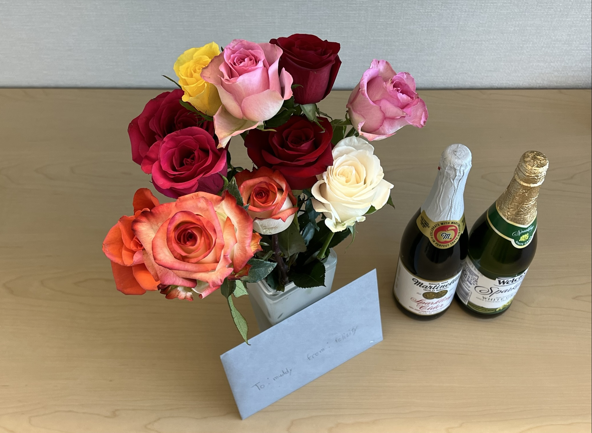
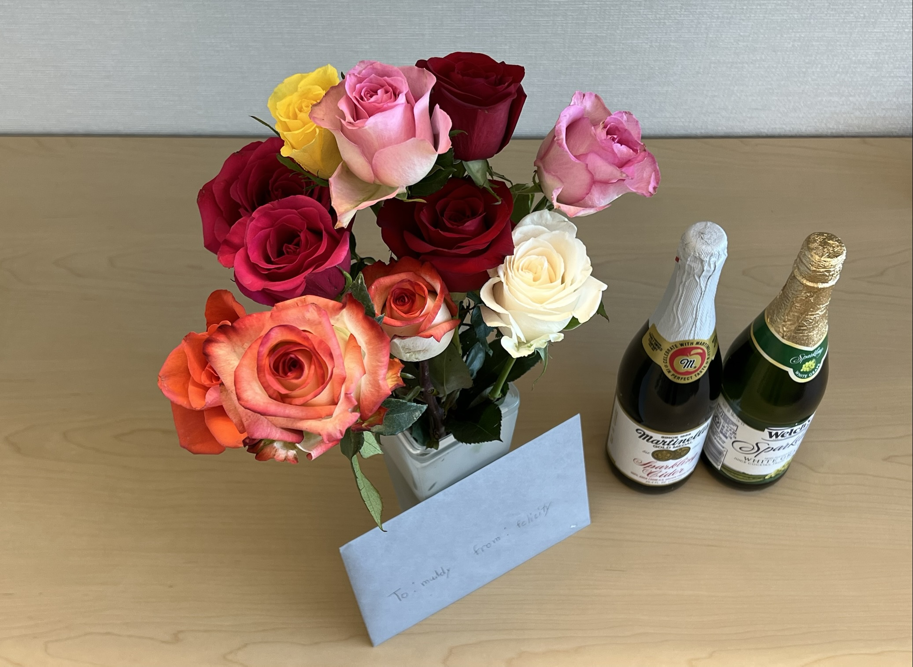

July 5, 2022
Haozhe is back from his first in-person visit to APS, ANL with Prof. Wenli Bi. During the 5-day beamtime, Haozhe got exposed to XAS experiment at 16IDD and XRD experiment at 3IDB and 13BMC. We thank Prof. Wenli Bi for working together. It was our pleasure!!! #XieLab #collaboration
June 17, 2022
Haozhe and Jose completed their one-week visit at UAB. We thank Prof. Wenli Bi for hosting and working together!! #XieLab #collaboration
April 20, 2022
Yongqi's first in-person trip to APS, ANL with the guidance of Prof. Wenli Bi at UAB in April 2022. Yongqi successfully conducted 9-day long experiments at two different beamlines (3IDB and 13BMC)! (Left, Greeshma in Prof. Wenli Bi's lab. Right, Yongqi) #XieLab #collaboration

April 11, 2022
Congratulations to Maddy for being awarded the Outstanding Doctoral Student Award by School of Graduate Studies at Rutgers!!! The Outstanding Doctoral Student Award recognizes excellence in doctoral research and scholarship across the disciplines. Way to go, Maddy! #proudofXieLab
March 30, 2022
Congratulations to Dr. Xin Gui who will be starting as an assistant professor at University of Pittsburgh this summer!! We have been so lucky to have him in the group with us. Professor Gui!! We are so proud of your amazing, well-deserved success and cannot wait to see the work that will come out of your new lab!! #career #proudofXieLab
January 13, 2022
Congratulations to Maddy for her successful Ph.D. defense of The Design and Investigation of Magnetic Topological Candidates under High Pressure and Chemical Doping Conditions! Now Dr. Marshall! We will sorely miss her and wish her the best in her future endeavors at Oak Ridge! #PhDdefense #proudofXieLab
 

December 17, 2021
We had our group lunch to celebrate the end of the year! Happy holidays and safe travel!! #Endof2021


December 1, 2021
Our graduate student, Ranuri, was awarded the best poster winners in the MRS Fall 2021 meeting at Boston. Congrats, Ranuri!!! #proudofXieLab
Highlighted by MRS official Twitter account here.
October 29, 2021
Our group website, Xie Lab, is on the way! #XieLab